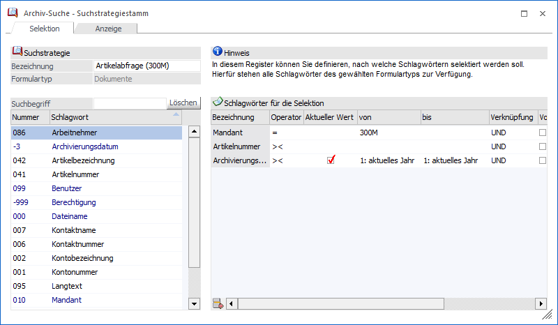
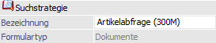
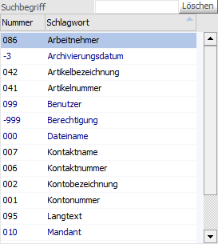
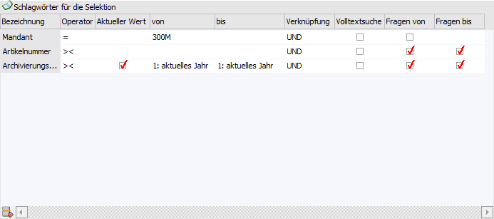
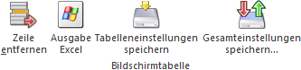
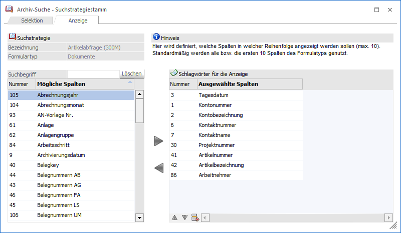
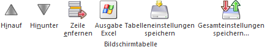

Bei Anwahl des Tabellenbuttons "neue Suchstrategie" bzw. "Suchstrategie bearbeiten" im Fenster Archiv-Suche öffnet sich der Suchstrategiestamm. Hier können Suchabfragen mandantenübergreifend kreiert und die Archivanzeige designed werden, wobei die Definition in unterschiedlichen Register stattfindet.
Register "Selektion"

In diesem Register kann die Suchabfrage definiert werden.
Suchstrategie

Ø Bezeichnung
An dieser Stelle wird die Bezeichnung der Suchstrategie hinterlegt.
Ø Formulartyp
Jede Suchstrategie wird auf Basis eines Formulartyps erstellt. Der aktuelle Typ wird hier angezeigt.
Tabelle "Schlagwörter"

In dieser Tabelle werden alle Schlagwörter gemäß Formulartyp angezeigt. Per Doppelklick können Felder in die Tabelle "Schlagwörter für die Selektion" übernommen werden. Über das Feld "Suchbegriff" ist eine Volltextsuche in den Spalten "Nummer" und "Bezeichnung" möglich.
Tabelle "Schlagwörter für die Selektion"

In dieser Tabelle können die Schlagwörter mit einem Operator ausgestattet werden.
Ø Bezeichnung
An dieser Stelle wird die Bezeichnung des Schlagworts angezeigt, deren Inhalt einem Suchbegriff / einer Bedingung (siehe "von / bis") entsprechend soll.
Ø Operator
Mit Hilfe des Operators wird angegeben, wie der Suchbegriff dem Schlagwort entsprechen soll:
ü = - gleich
Wenn diese Option
verwendet wird, dann werden alle Archiveinträge angezeigt, die gleich dem
Suchbegriff sind (z.B. wenn als Suchbegriff Kontonummer und Wert 230A001 gewählt
wurden, dann werden nur die Einträge angezeigt, bei denen die Kontonummer
230A001 ist).
Hinweis
Mit dieser Funktion kann auch nach Leereinträgen gesucht werden. D.h. wird bei der Beschlagwortung ein leeres Schlagwort vergeben, kann danach gesucht werden, indem der zu suchende Wert einfach leer gelassen wird (dabei darf die Checkbox "Volltextsuche" nicht aktiviert werden).
ü >< - von / bis
Bei dieser
Option stehen 2 Eingabefelder für Wert 1 und Wert 2 zur Verfügung. Es werden nur
jene Einträge angezeigt, die zwischen den beiden Werten liegen.
ü > - größer
Wird diese Option
verwendet, dann werden alle Archiveinträge angezeigt, die größer als der
eingegebene Wert sind.
ü < - kleiner
Wird diese
Option verwendet, dann werden alle Archiveinträge angezeigt, die kleiner als der
eingegebene Wert sind.
ü % - wie
Wird diese Option
verwendet, dann werden alle Archiveinträge angezeigt, bei denen der eingegebene
Wert irgendwo im Schlagwort vorkommt.
Ø Aktueller Wert
Die Option "Aktueller Wert" steht bei Feldern des Typs "Datum" zur Verfügung und entspricht bei Operator "= - gleich" dem Tagesdatum. Wird der Operator ">< - von / bis" verwendet, so stehen in den Spalten "von / bis" Zeiträume als Selektionskriterium zur Verfügung.
Ø von / bis
In diesen Spalten wird, abhängig vom Operator, der bzw. die Suchbegriffe hinterlegt.
Ø Volltextsuche
Ist diese Option aktiv, dann wird der Suchbegriff im kompletten ausgewählten Feld gesucht. Bleibt die Option inaktiv, dann wird der Suchbegriff nur am Anfang des ausgewählten Feldes gesucht - diese Art der Suche ist - im Vergleich zur Volltextsuche - etwas rascher.
Ø Verknüpfung
Über die Spalte "Verknüpfung" kann entschieden werden, wie die einzelnen Bedingungen miteinander verknüpft werden sollen. Hierfür stehen die folgenden Varianten zur Verfügung:
ü UND
Wenn die Bedingungen mit
"UND" verknüpft werden, dann müssen beide Selektionskriterien zutreffen, damit
eine Eintrag gefunden wird.
ü ODER
Wenn die Bedingungen mit
"ODER" verknüpft werden, dann muss eines der Kriterien zutreffen, egal wie viele
Kriterien hinterlegt wurden.
Ø Fragen von / bis
Durch Aktivierung wird beim Auslösen der Suche das Fenster Archiv-Suche - Suchstrategie geöffnet, in welchem die Suchparameter hinterlegt werden können.
Tabellenbuttons "Schlagwörter für die Selektion"

Ø Zeile entfernen
Durch Anklicken des "Zeile entfernen"-Buttons kann die markierte Bedingung gelöscht werden.
Ø Ausgabe Excel
Durch Anwahl des Buttons "Ausgabe Excel" wird der Inhalt der Tabelle an Microsoft Excel übergeben.
Ø Tabelleneinstellungen speichern
Die Spalten einer Tabelle können grundsätzlich an beliebige Positionen verschoben, bzw. in der Breite entsprechend angepasst werden. Durch Anwahl des Buttons "Tabelleneinstellungen speichern" werden die Einstellungen benutzerspezifisch gespeichert und bei dem nächsten Aufruf des Programmpunktes wieder vorgeschlagen.
Ø Gesamteinstellungen speichern
Im Gegensatz zu "Tabelleneinstellungen speichern" können mit "Gesamteinstellungen speichern" mehrere Tabellenaufbauten gespeichert und nach Wunsch geladen werden. Zusätzlich werden Sonderfunktionen der Tabelle (z.B. "Spalte gruppieren") ebenfalls bei der Speicherung bedacht.
Register "Anzeige"

In dem Register "Anzeige" kann definiert werden, welche 10 Beschlagwortungsspalten in der Archivanzeige dargestellt werden sollen.
Tabellenbuttons "Schlagwörter für die Anzeige"

Ø Hinauf / Hinunter
Mit Hilfe dieser Buttons kann die Reihenfolge der Schlagwörter angepasst werden.
Ø Zeile entfernen
Durch Anklicken des "Zeile entfernen"-Buttons kann die markierte Bedingung gelöscht werden.
Ø Ausgabe Excel
Durch Anwahl des Buttons "Ausgabe Excel" wird der Inhalt der Tabelle an Microsoft Excel übergeben.
Ø Tabelleneinstellungen speichern
Die Spalten einer Tabelle können grundsätzlich an beliebige Positionen verschoben, bzw. in der Breite entsprechend angepasst werden. Durch Anwahl des Buttons "Tabelleneinstellungen speichern" werden die Einstellungen benutzerspezifisch gespeichert und bei dem nächsten Aufruf des Programmpunktes wieder vorgeschlagen.
Ø Gesamteinstellungen speichern
Im Gegensatz zu "Tabelleneinstellungen speichern" können mit "Gesamteinstellungen speichern" mehrere Tabellenaufbauten gespeichert und nach Wunsch geladen werden. Zusätzlich werden Sonderfunktionen der Tabelle (z.B. "Spalte gruppieren") ebenfalls bei der Speicherung bedacht.
Buttons
Ø Speichern und Anzeigen
Durch Anwahl dieses Buttons bzw. der Taste F5 wird die Suchstrategie gespeichert und die Suche ausgelöst.
Ø Ende
Bei Anwahl des Buttons "Ende" bzw. der Taste ESC wird das Fernster geschlossen und alle nicht gespeicherten Eingaben verworfen.
Ø Suchstrategie speichern
Mit Hilfe dieses Buttons wird die Suchstrategie gespeichert und das Fenster geschlossen.